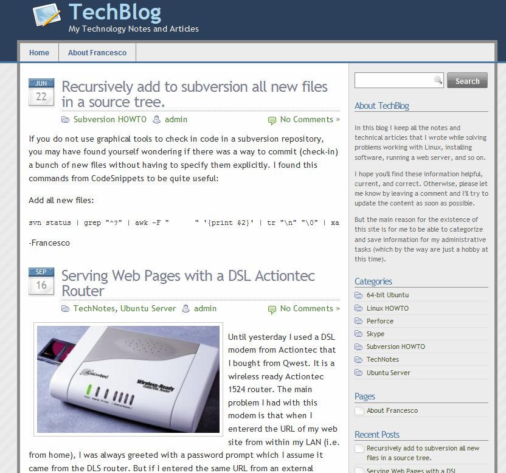
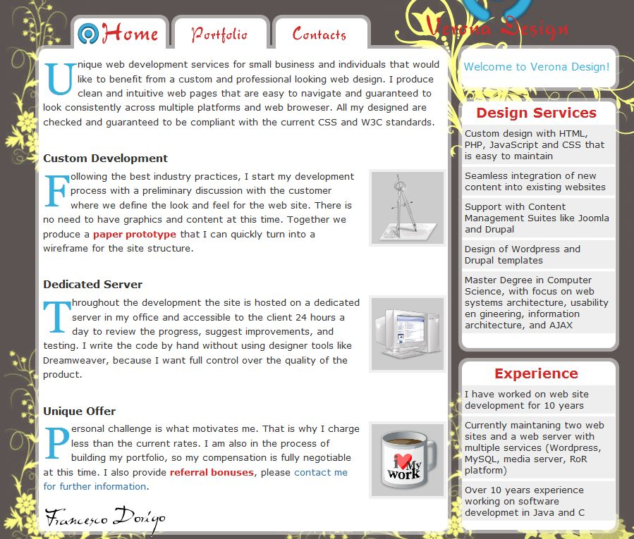
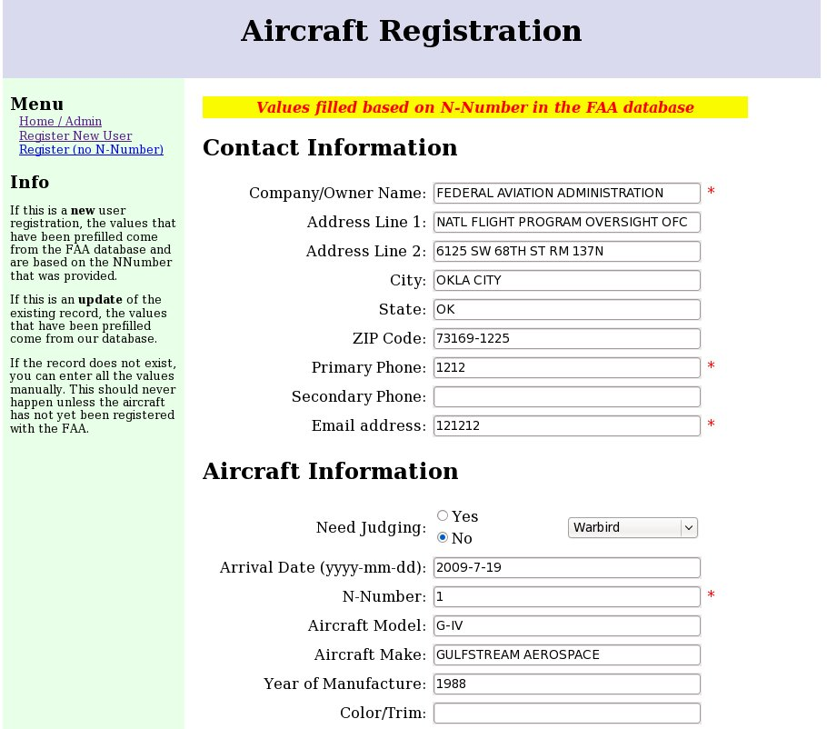
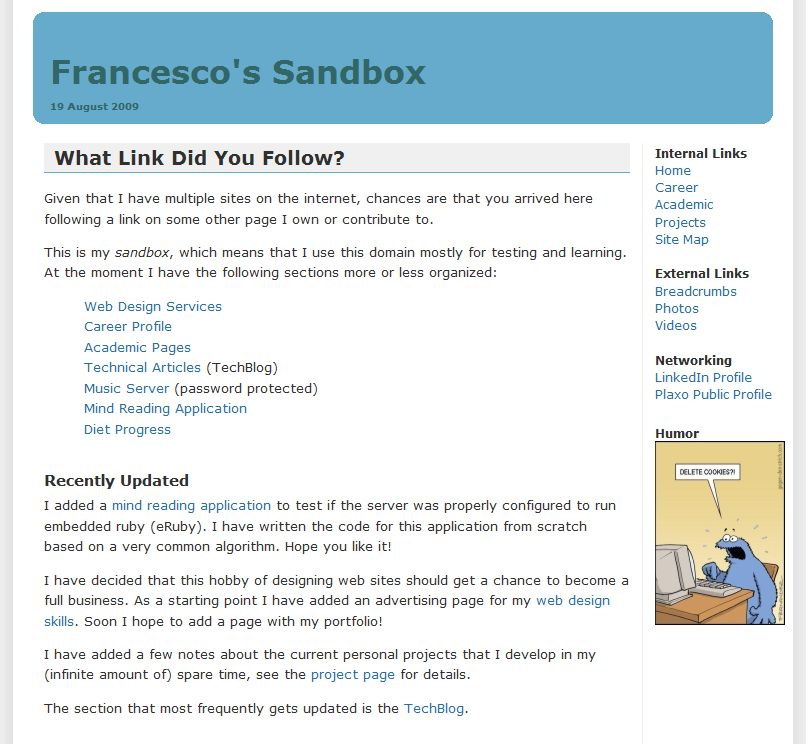
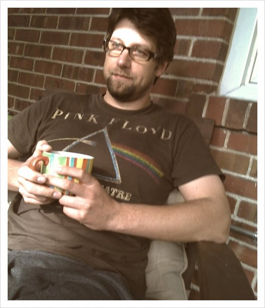

Web Design for Human Beings
"Intuitive web portals are hard to come by - your business deserves one"
Unique web development services for small business and individuals that would like to benefit from a custom and professional looking web design. I produce clean and intuitive web pages that are easy to navigate and guaranteed to look consistently across multiple platforms and web broweser.
Throughout the development the site is hosted on a dedicated server in my office and accessible to the client 24 hours a day to review the progress, suggest improvements, and testing. I write all the code by hand because I want full control over the quality of the product.
Qualifications
"Balancing academic trainig and professional experience is my engineering motto"
During the past 12 years I have implemented and maintained end-to-end solutions for personal web sites, non-for-profit organizations, and small businesses. I have worked with existing frameworks like Drupal, Joomla, and Wordpress.
Porfolio
|  | TechBlogA Wordpress customized theme for a technical blog |
|  | Verona DesignA single page advertisment for business |
|  | Airplane Registration DatabaseAn enterprise application written in JSP and backed by MySQL |
|  | FrancescoDorigo.comPersonal web portal which links to academic and professional info |
About Me

Technologies I have worked with:
- Drupal, Joomla, Wordpress
- Template customization
- Java Server Pages (JSP)
- Relational Databases (MySQL)
- Apache, Tomcat, Glassfish
- Java, C/C++, JavaScript
- PHP, Ruby, Python, Perl